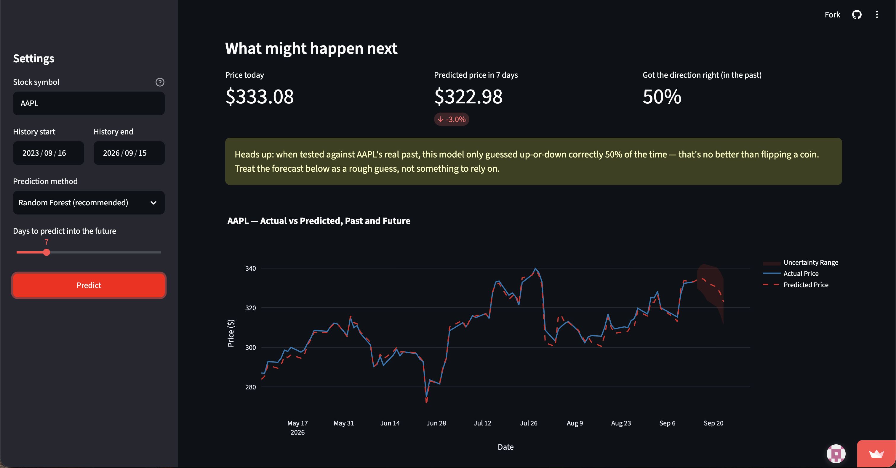

I've always wondered whether you could actually predict where a stock is headed just by looking at its own price history, so I built this to test that out. You type in any ticker, pick a date range, and the app pulls the real price data, builds a handful of indicators from it, and trains a model to guess what happens next, both in dollars and in which direction it's likely to move. The interesting part isn't really the "AI," it's the bookkeeping around it. Before the app ever shows you a forecast, it quietly tests itself against the stock's own past: pretending it doesn't know what happened, guessing anyway, then checking how close it got. That's the part I care most about, honestly. It's easy to build something that looks impressive on the surface. It's a lot harder to build something that's upfront about how well it actually works, and I wanted this to be the second kind. So it is upfront. If a model's guesses aren't meaningfully better than a coin flip on a given stock, the app tells you flat out instead of quietly showing you a confident-looking chart anyway. The forecast line itself comes with a shaded range around it that widens the further out you look, since a guess about three weeks from now deserves a lot less trust than a guess about tomorrow. Everything's built in Python: pandas and scikit-learn do the heavy lifting on the modeling side, Plotly draws the charts, and Streamlit turns the whole thing into a real website, so you can just open the link and try it on whatever stock you're curious about.